c 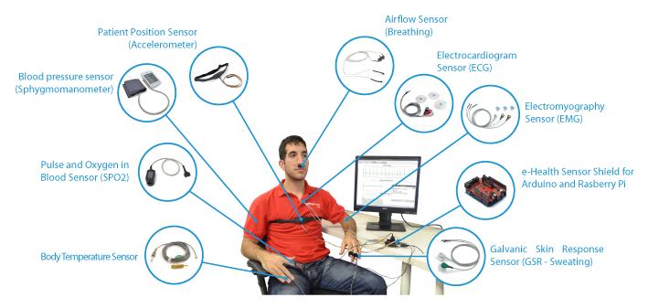
La plataforma sensorial e-Health permite a usuarios de Arduino, Raspberry Pi e Intel Galileo, realizar aplicaciones médicas con sensores biométricos donde se puede monitorizar el cuerpo mediante 10 sensores diferentes. Esta información puede usarse en tiempo real para ver el estado de un paciente o conseguir datos sensibles para diagnósticos.
Dicha información biométrica puede enviarse inalámbricamente a través de 6 opciones disponibles diferentes: Wi-Fi, 3G, GPRS, Bluetooth, 802.15.4 y ZigBee dependiendo de la aplicación. También disponible en la página web el e-Health Sensor Platform Complete Kit de "Primeros Auxilios" para makers.
Para conocer más detalles sobre su funcionamiento veamos el siguiente video en el cual su creador nos explica sus aplicaciones.
Descargar e instalar el software Arduino.
https://www.arduino.cc/en/Main/Software
Descargar librería e-health sensor platform compatible con Arduino MEGA, descomprimir y pegar en la carpeta libraries de Arduino.
Conexión de los sensores compatibles con la plataforma e-health
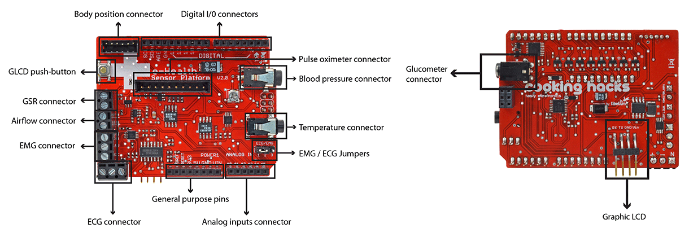
Ensamble de la tarjeta e-health con Arduino
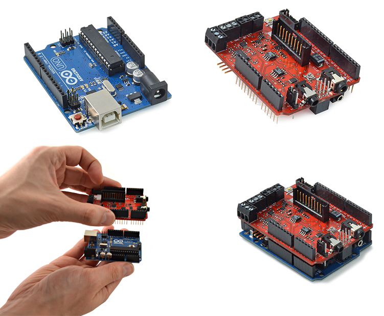
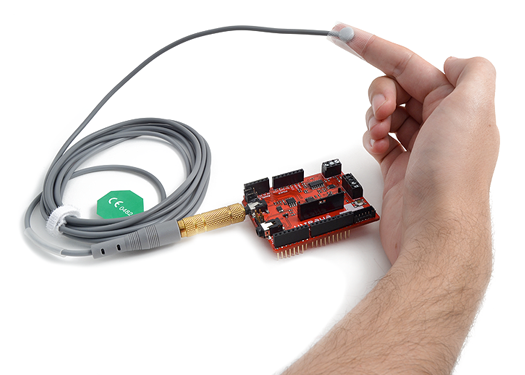
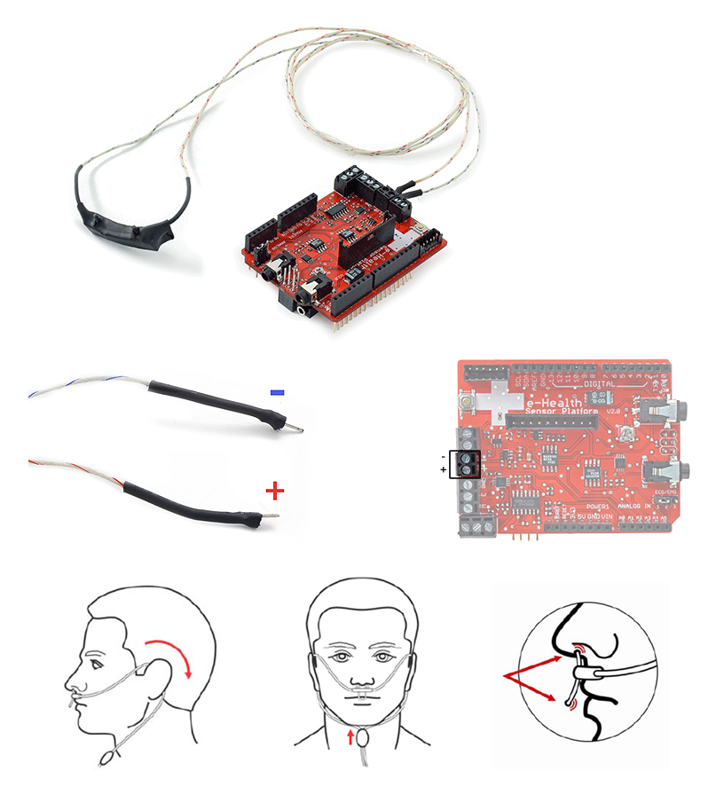
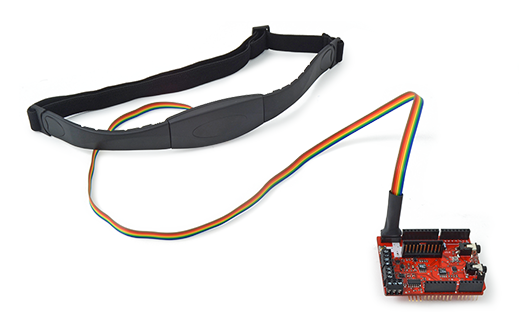
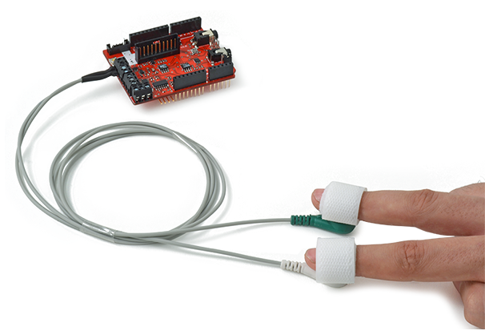
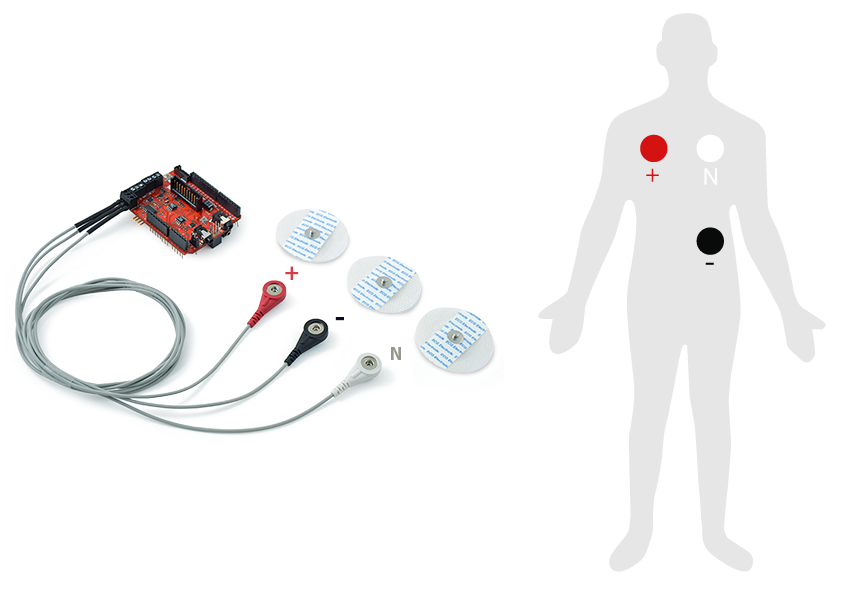
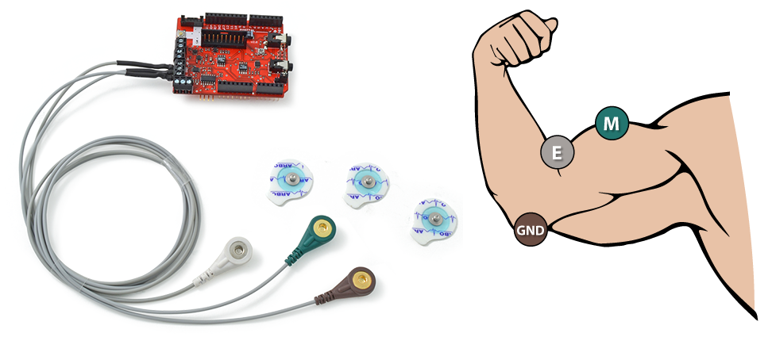
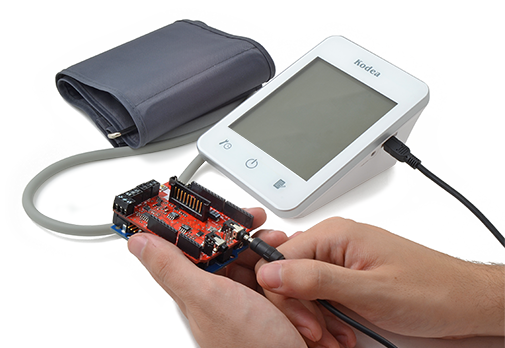
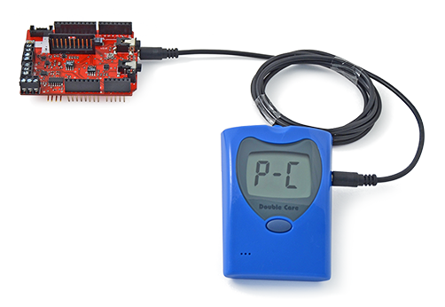